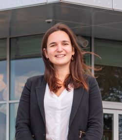

Je suis étudiante à Audencia en mastère spécialisé Stratégies Digitales et Data Marketing (MS SDIDAM pour les intimes).
Depuis toute petite de fais de la couture. C'est pour cela que j'ai décidé de donner des idées de réutilisation et de réparation de vêtement dans mon blog que je vous invite à lire !